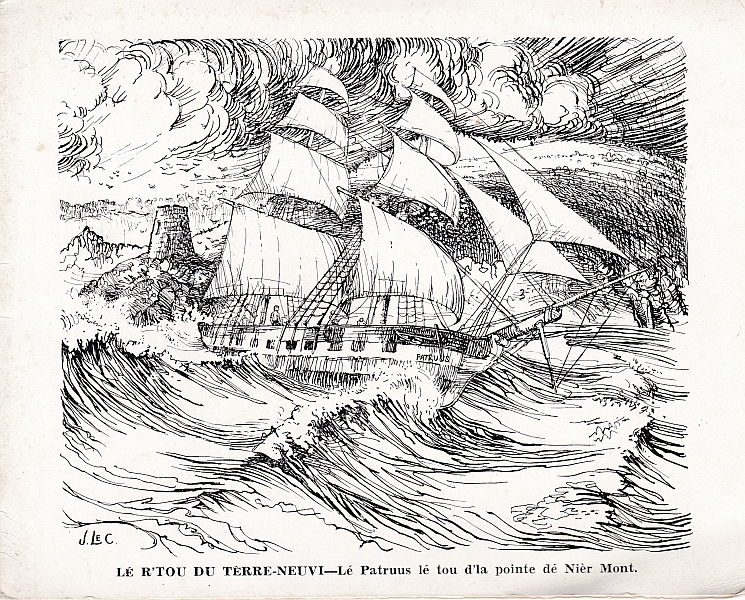

Bein des fais, en vouos pâlant d'man Papa, j'vouos avais dit tch'il avait té naufragi sans l'temps tch'i' navidgeait. J'l'avais ouï en pâler quand j'tais mousse, mais j'mé r'souvenais pas trop bein d'l'histouaithe. - ch'n'est pas êtonnant, car l'y'à quâsi chînquante ans d'pis que j'l'avais ouïe. M'n'onclye Winter de Dgèrnésy, tch'a septante-chînq and et une fichue bouanne mémouaithe, m'l'a racontit l'aut' jour.
Papa té à Terreneuve. L'y'avait un neu navithe, (eune Brigantine), tchi v'nait d'ête bâti. Les Bourgeais voulaient l'envyier en Jèrri, chèrgi d'paisson, mais n'y'avait pas d'Captaine par les c'mîns a chu moment-là. Enfîn, Charles Le Cornu d'la Villaise, tch'avait té contremaître pour la compagnie dans l'temps, dit ès Bourgeais tch'i' pouvait navidgi l'baté en Jèrri, et i' fut mîns à bord comme Captaine pour le viage.
I' taient chinq à bord. J'me r'souveins pas d'aver ouï touos lus noms, mais j'sais bein qu'y'avait un Douard Huelin, tch'était v'nu d'Nièrmont, et tch'était un vièr amîn à Papa, parmi yeux. Ch'tait li qu'agissait comme contremaître.
Quand ils avaient té quatre ou chînq jours en mé i' vînt eune tempête, et i' faithait un temps péthisablye, le vent heurlait, et la mé tait comme des montagnes. Jamais Papa n'avait veu d'ité temps, et pourtant il avait navidgi pour d's'années. Le vent tait si fort que toutes les velles taient trillies à m'suthe tch'il êprouvaient à les mettres à haut. Ch'là duthit pour deux'trais jours, et l'navithe, tch'avait à couorre dévant l'vent, fut poussé hors de sa course. Eune niet, i' criyaient que l'vent allait molli, mais i' s'mint à venter acouo piéthe que jamais, et Papa et Douar Huelîn, tch'étaient sus l'pont, pensaient qu'le navithe tait en dangi d'couler. I' n'pouvaient pas lî garder l'nez dans l'vent et i' rouollait d'un côté à l'autre comme un bouchon, et chaque fait qu'les louaimes bûchaient par dessus, i' craignaient tch'i' n'sé r'levethait jamais.
Quand i' vint un temps Papa pensit qu'la seule maniethe de sauver l'navithe et lus vie en mème temps tait d'coper les mâts. Il en pâlit à Douard Huelîn, tchi tait du mème avis, et Douard décidit d'aller d'mander permission au Captaine, tch'était à prier l'Bouan Dgieu dans sa chambre. Il eut à aller à la chambre à grapîns, - n'y'avait pas mouoyain d'se t'nîn d'but sus l'pont, et i' fut eune volée auve le Captaine. I' pathaît tch'i' n'en tait pas d'avis, mais à la fîn i' dît à Douard: "Et bein, copez-les, vous, les mâts!" Au péthi d'lus vie, Papa et Douard lus mîntent à scier ches mâts-là auve eune scie à deux. Ch'tait pas aisi, auve un baté tchi rouollait dans eune mé comme des montagnes et des louaimes tchi bûchaient sus yeux, mais i' l'en r'pathîtent, et eune fais les mâts hors bord, le navithe tait bein pus trantchil.
Chutte niet-là lus pathut si longue tch'i' lus semblyeait qu'lé jour ne veindrait jamais, mais à la fîn du temps le jour de fît, et i' lus trouvîtent sus un rotchi en veue d'terre, et l'y avait seulement deux'trais pids d'ieau. L'y'avait pus d'chent personnes le tou du navithe. Ches personnes-la l's'em'nîtent à terre. Ch'tait eune île tchi tait gentiment grande. Papa et Douard Huelîn allîtent ensemblye dans la maîson d'un homme et sa femme. Ch'tait des maîsons faites auve un maniethe de mortchi tchi tait comme du pité. Ches gens-là vivaient sus des patates et du paisson, et i' pâlaient un drôle de langage que Papa n'connaissait pas. La femme lus prêtit d's'habits et s'tchit les leurs oprés du feu. Ch'tait un feu d'bouais, i' pathaît tch'i' n'avaient jamais veu d'tchèrbon.
L's'hommes de ch't île-là ramasîtent autant d'la cartchaîson d'paisson comme i' pûtent sauver de d'dans l'navithe et l'pithatîtent autant qu'possibl'ye. Les naviguants n'pûtent pas sauver lus coffres ni lus habits. I' n'avaient qu'les habits sus lus dos. Le navithe bûchit en morcieaux dans deux'trais mathées.
Les batieaux n'passaient pas souvent par-là, et Papa criyait tch'il éthait p'têt' à passer l'restant d'sa vie sus ch't' île-là, mais li et l'Captaine et Douard Huelîn fîtent des signieaux d'tchique maniethe, et mafîngre quand ils avaient té-là trais mais, un navithe vit les signieaux et vînt les ramâser et les prInt à bord. I' s'adonnait qu'chu navithe-là s'en v'nait en Jèrri, et i' l'ûtent la chance de r'venîn siez yeux. Le monde sus l'île lus avaient 'té bouans, et bieau tch'ils avaient perdus lus habits i' taient bein r'connaissants d'être en vie.
Charles Le Cornu vêtchut bein longtemps oprès, mais i' n's'en r'allit pas en mé. I' cachit eune Beusse tch'allait en ville pour bein d's années. Papa mouothit en mil neu chent trais. Douard Huelîn d'meuthit à St. Brélade quand i' tchittit la mé, et tait un vièr homme quand i' mouothit.
George d'La Forge
15/11/1947
Viyiz étout: